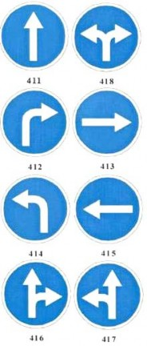
Разрешается движение только в направлениях, указанных на знаках стрелками. Знак, разрешающий поворот налево, разрешает также разворот.
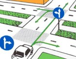
Действие знака распространяется только на то пересечение проезжих частей, перед которым он установлен, при этом знак с прямой стрелкой устанавливается непосредственно перед соответствующим пересечением, а знак с изогнутой стрелкой,
разрешающий только поворот, - на некотором расстоянии до места поворота.
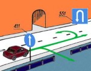
Действие знака 411, установленного на дороге за перекрестком, распространяется до ближайшего перекрестка. Знак не запрещает поворот на право на место парковки или отдыха и на прилегающую к дороге территорию.
Поворот налево или разворот разрешается только в месте, где имеется соответствующий знак 53, а разворот - только в месте, где имеется знак 551.
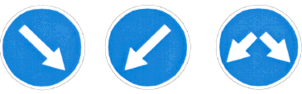
Объезд разрешается только со стороны, указанной стрелкой на знаке.
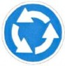
Разрешается движение только в указанном стрелками направлении.
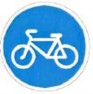
Разрешается только движение на велосипедах или мопедах. Если обозначенные знаком дорога или участок дороги пролегают рядом с проезжей частью или обочиной, то для движения на велосипедах или мопедах разрешается использовать только эту дорогу или этот участок дороги.
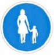
Разрешается движение только пешеходам. Знаком могут быть обозначены также участки дороги, предназначенные для движения пешеходов, или тротуары.
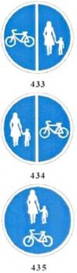
Разрешается движение только велосипедов и пешеходов. При наличии знаков 433 и 434 движение велосипедистов разрешается по одной, а пешеходов - по другой стороне дорожки, как показано на знаке; при наличии знака 435 они пользуются дорожкой совместно. В последнем случае велосипедисты не должны создавать опасности и помехи для пешеходов, а пешеходы не должны преднамеренно препятствовать движению велосипедистов. Если дорога или участок дороги, обозначенные знаками 433-435, расположены рядом с проезжей частью или обочиной, то вышеназванные участники дорожного движения могут передвигаться только по этой дороге или этому участку дороги.
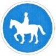
Разрешается передвижение только верхом.
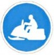
Разрешается передвижение только на мотосанях.
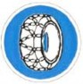
Знак обязывает при движении на моторном транспортном средстве использовать цепи противоскольжения по крайней мере на одной из осей.
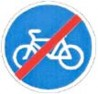
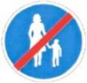
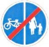 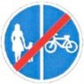 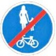
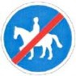
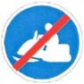
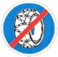
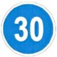
Разрешается движение только с указанной на знаке или большей скоростью (км/ч).
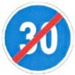
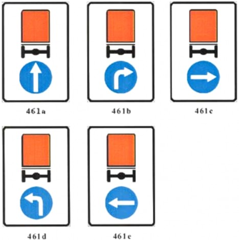